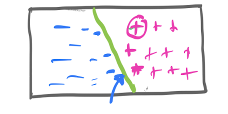

0.1 Linear Classifier
How to classify various data points into two types ( for example : spam/non spam emails):
How to identify equation of a classifier (straight line in 2D plane) which can split this data sets in two groups?
Vector Algebra: To help us find distances

The classification is done by identifying a line in case of 2d which is evenly placed between two groups of data.And, to be specific its determined by calculating the distance from the $ \color{green} $ line which is the classifier( in fig 3)
For example, we will calculate the distance D1, D2, D3 from the classifier line. The magnitude of this distance is used to determine how confident the classifier is about the point. If the distance is positive then the classifier marks them with 1 ( Points \color{magenta}1 and \color{magenta}{2}) and if the distance is negative then classifier marks them -1 ( point \color{blue}3)
Let’s assume the plane P is the hyperplane which will be used to classify two groups of data. x is any vector
Distance between point x and the hyperplane is given by \alpha\theta. Why?
Theta is the Perpendicular to the plane. So the vector to point x is given by \alpha\theta
We need to find this \alpha\theta.
By vector geometry :
w+z=x 1
Equation of the plane is given by \theta.x=0 where x is give by:
\begin{bmatrix} x_1 \\ x_2 \\ x_3 \\ ....\\ x_n \end{bmatrix}
From 1 :
or:
\theta^T.z = \theta^T.x-\theta^T.w [Dot product with \theta on both sides: ]
or, z= \frac{-w.\theta}{||\theta||}
(the -ve sign indicates which direction is the distance)
0.2 Algorithm: Perceptron
Binary classification : Data represented by two labels.
Assume we have a data set as per the table. So we have a feature matrix :
Feature Matrix
\begin{bmatrix} x_{11} && x_{12} && x_{13} \\ x_{21} && x_{22} && x_{23} \\ x_{31} && x_{32} && x_{33} \\ x_{41} && x_{42} && x_{43} \\ x_{51} && x_{52} && x_{53} \\ \end{bmatrix}
Label Matrix
y=\begin{bmatrix} 1 \\ 1 \\ -1 \\ -1 \\ -1 \\ \end{bmatrix}
| Label | Label Value | Feature | Feature | Feature |
|---|---|---|---|---|
| \color{green}1 | \color{green}2 | \color{green}3 | ||
| y_{\color{orange}{1}} | \color{deeppink}1 | x_{\color{green}1}^{\color{orange}{(1)}} | x_{\color{green}2}^{\color{orange}{(1)}} | x_{\color{green}3}^{\color{orange}{(1)}} |
| y_{\color{orange}{2}} | \color{deeppink}1 | x_{\color{green}1}^{\color{orange}{(2)}} | x_{\color{green}2}^{\color{orange}{(2)}} | x_{\color{green}3}^{\color{orange}{(3)}} |
| y_{\color{orange}{3}} | \color{deeppink}1 | x_{\color{green}1}^{\color{orange}{(3)}} | x_{\color{green}2}^{\color{orange}{(3)}} | x_{\color{green}3}^{\color{orange}{(3)}} |
| y_{\color{orange}{4}} | \color{blue}{-1} | x_{\color{green}1}^{\color{orange}{(4)}} | x_{\color{green}2}^{\color{orange}{(4)}} | x_{\color{green}3}^{\color{orange}{(4)}} |
| y_{\color{orange}{5}} | \color{blue}{-1} | x_{\color{green}1}^{\color{orange}{(5)}} | x_{\color{green}2}^{\color{orange}{(5)}} | x_{\color{green}3}^{\color{orange}{(5)}} |
def perceptron_single_step_update( feature_vector, label, current_theta, current_theta_0):
rows = feature_vector.shape[0]
decision = label*(np.dot(current_theta, feature_vector)+current_theta_0)
if decision <= 0:
current_theta = current_theta + label*feature_vector
current_theta_0 = current_theta_0 + label
return (current_theta, current_theta_0)
else:
return (current_theta, current_theta_0)
def perceptron(feature_matrix, labels, T):
theta = np.zeros(feature_matrix.shape[1])
theta_0 = 0
nsamples = feature_matrix.shape[0]
for t in range(T):
for i in get_order(nsamples):
# Your code here
theta, theta_0 = perceptron_single_step_update(
feature_matrix[i], labels[i], theta, theta_0)
# print("current theta",theta)
return (theta, theta_0)
0.3 Perceptron Performance
M times the update has been made. We know that the update formula is :
\theta_i = \theta_{i-1} + y_i.x_i x_i = feature vector at ith round
Let t_i be the times when the weights are updated. t_i \in [ 1,.....M]\in [1....T]
to simplify two weights updates will be indicated by w_{k+1} , and previous one will be indicated by w_k
Total Update is Sum of Update at every step:
| Declaration | Logic | Col3 |
|---|---|---|
| Sum of Changes= | ||
| ||\sum_{t=1}^M y_t.x_t ||= | ||
| || \sum_1^M w_{k+1}-w_{k} ||= | Theta ( or weight changes at each step) | |
= ||\color{red} w_{M+1} - w_{M} + \color{green} w_{M} - w_{M-1} + \color{magenta} w_{M-1} - w_{M-2} + …………. \color{blue} w_{3} - w_{2} + \color{Aquamarine} w_{2} - w_{1} || |
Adding individual content | |
| = ||w_{M+1} - w_1|| | By telescoping | w_m is a vector |
| w_M= | ||